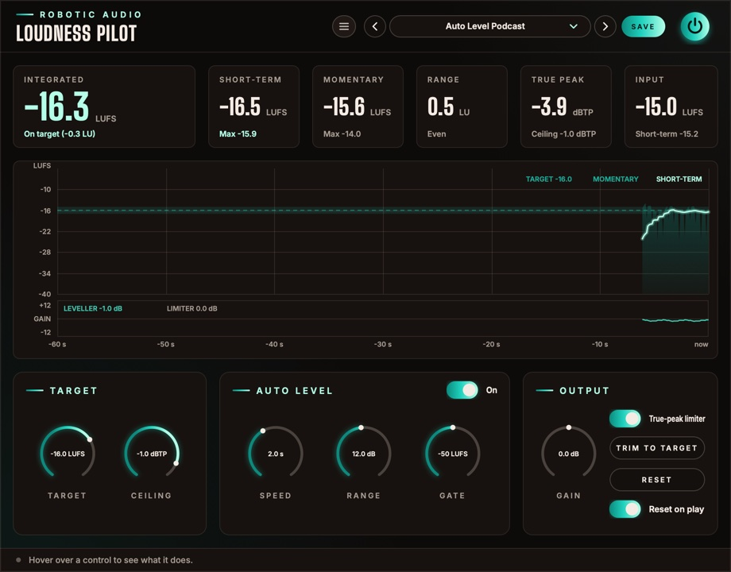

Loudness Pilot
A loudness meter that also does something about it. It measures your podcast, audiobook or mix the way the streaming services and broadcasters do, sets the gain that lands it on their target in one click, can ride the level of a voice like an engineer on a fader, and keeps the peaks under the ceiling with a true-peak limiter.
- EBU R128 / ITU-R BS.1770 metering
- Integrated, short-term, momentary, range, true peak
- Trim to target in one click
- Auto leveller for speech
- True-peak limiter
- 11 delivery presets
- AU · VST3 · Standalone

Quick start
From an unknown level to a file that meets the spec.
Put it last
Insert Loudness Pilot as the last plugin on your master or voice bus, after any EQ and compression, so it measures and limits what really goes out.
Pick the standard
Choose a preset for where it's going: Podcast Stereo -16 LUFS for Apple Podcasts, Spotify / YouTube -14 LUFS, Broadcast EBU R128 -23 LUFS and so on. That sets the Target and the Ceiling.
Play it through
Play the whole programme, or a typical stretch of it. Integrated fills in and tells you how far off the target you are.
Trim to target
Press TRIM TO TARGET. Gain is set so the integrated loudness lands on the target, and the measurement starts over.
Check again
Play it through once more. Integrated should read on target (in the accent colour), and True peak under the ceiling.
Bounce
With Reset on play on, the measurement starts over whenever the host starts playing, so a bounce is measured from its first second.
The window
Numbers on top, the last minute in the middle, the controls below.
- Header
- The preset bar (previous, next, the list, SAVE), the power button (bypass) and the menu (three lines) with this manual. Click the logo for the version and credits. With an AI key, a >_ beside the preset bar opens the designer. Until Loudness Pilot is licensed, a DEMO or TRIAL chip beside the menu opens the licence.
- Readouts
- Integrated (wide), Short-term, Momentary, Range, True peak and Input. See The readouts.
- Graph
- The last 60 seconds of loudness round the target, with the leveller's gain and the limiter's reduction in a strip under it. See The graph.
- Target
- The loudness to aim for and the true-peak ceiling.
- Auto Level
- The leveller, with its switch in the card's title: Speed, Range and Gate.
- Output
- Gain, the limiter switch, TRIM TO TARGET, RESET and Reset on play.
- Tooltip strip
- Along the bottom: what the control under the mouse does.
Signal flow
Measure, level, trim, limit, measure again.
The input is measured first (the Input readout). The leveller takes that measurement every 100 ms and sets its gain from it, then Gain is added, then the limiter keeps the true peaks under the Ceiling. Everything else on screen measures what comes out at the end: what your listeners will hear.
The limiter looks 2 ms ahead, so the audio is delayed by that much (plus a few samples), on or off. The host is told and compensates. The measurements follow ITU-R BS.1770 and EBU R128, as the streaming services and broadcasters use them.
The readouts
Six numbers, coloured by how they sit against the target.
- Integrated
- The loudness of everything since the last reset, gated as EBU R128 does it (silence and pauses don't pull it down). This is the number delivery specs talk about. Under it: on target (within 1 LU), or how many LU too loud or too quiet. Its colour says the same: the accent on target, red too loud, blue too quiet.
- Short-term
- The loudness of the last 3 seconds, and the highest it has been since the reset.
- Momentary
- The loudness of the last 400 ms, and its highest.
- Range
- How much the loudness varies (LRA, EBU Tech 3342), once there are 3 seconds or more to judge. Speech usually sits between 3 and 8 LU; under it, Even, Dynamic (over 6 LU) or Very dynamic (over 10 LU).
- True peak
- The highest peak since the reset, between samples too, as a decoder will see it. It turns red when it went over the ceiling.
- Input
- The integrated loudness of what comes in, before the leveller, the gain and the limiter, with its short-term loudness under it. Compare it with Integrated to see how much Loudness Pilot moved.
RESET (in the Output card) starts Integrated, Range, True peak and the maximums over.
The graph
The last minute, round the target.
Time runs from right (now) to left (a minute ago). The vertical scale is centred on the target: 12 LU above it and 24 below, with a line every 6 LU labelled in LUFS and the target drawn as a band across the graph.
- Momentary
- The filled area: the loudness of each 400 ms, jumping with every word or beat.
- Short-term
- The bright line: the loudness of the last 3 seconds, the one to keep near the target band.
- Gain strip
- Under the graph, ±12 dB round 0. The green line is the leveller's gain (LEVELLER, with its current value); red bars down from the top are the limiter's reduction (LIMITER). Frequent red bars mean the limiter is working hard: lower Gain or the Target.
Target
Where it has to land.
- Target
- The integrated loudness to aim for: Apple Podcasts −16, Spotify and YouTube −14, mono podcasts −19, EBU R128 −23 LUFS. The readouts, the graph, TRIM TO TARGET and the leveller all work towards it. −30 … −10 LUFS
- Ceiling
- The highest true peak allowed out; the limiter keeps peaks under it. −1 dBTP suits most services; audiobooks often ask for −3. −9 … 0 dBTP
Auto Level
An engineer on the fader, for speech.
Switch it on with the On pill in the card's title. The leveller listens to the input's momentary loudness, keeps a slow average of it and sets the gain that brings that average to the target. A soft speaker comes up, a loud one goes down, and the integrated loudness stays close to the target before any trim. Its gain glides between steps, so it never clicks. With it off, its gain glides back to 0 dB and the three knobs grey out.
- Speed
- How many seconds the leveller listens back before it moves the gain. Short follows every phrase; long only rides big changes, like a new speaker. It turns down four times faster than it turns up, as a compressor would. 0.5 … 10 s
- Range
- The most it may turn up or down. 1 … 24 dB
- Gate
- Under this loudness (pauses, breaths, room noise) it holds its gain instead of turning silence up. Raise it in a noisy room. −70 … −30 LUFS
Output
Trim, limit and measure.
- Gain
- Added after the leveller, before the limiter. TRIM TO TARGET sets it for you. −24 … +24 dB
- True-peak limiter
- Keeps peaks, between samples too, under the Ceiling. It looks 2 ms ahead, so the gain is already down when a peak arrives, and recovers smoothly (120 ms). Off, the audio is still delayed by the same amount, so switching it never moves the timing.
- TRIM TO TARGET
- Sets Gain so the integrated loudness lands on the target, then starts the measurement over. It needs a measurement first: play the whole programme, or a typical stretch of it.
- RESET
- Starts the integrated, range and peak measurements over.
- Reset on play
- Starts the measurement over whenever the host starts playing, so a bounce or a take is measured from its start.
Presets
The delivery standards, and the same with the leveller riding.
| Preset | Target | Ceiling | Leveller |
|---|---|---|---|
| Default | −16 LUFS | −1 dBTP | Off |
| Podcast Stereo -16 LUFS | −16 LUFS | −1 dBTP | Off |
| Podcast Mono -19 LUFS | −19 LUFS | −1 dBTP | Off |
| Spotify / YouTube -14 LUFS | −14 LUFS | −1 dBTP | Off |
| Audiobook -20 LUFS | −20 LUFS | −3 dBTP | Off |
| Broadcast EBU R128 -23 LUFS | −23 LUFS | −1 dBTP | Off |
| Broadcast ATSC A/85 -24 LKFS | −24 LKFS | −2 dBTP | Off |
| Auto Level Podcast | −16 LUFS | −1 dBTP | 2 s, ±12 dB |
| Auto Level Podcast Mono | −19 LUFS | −1 dBTP | 2 s, ±12 dB |
| Auto Level Gentle | −16 LUFS | −1 dBTP | 6 s, ±6 dB |
| Auto Level Interview | −16 LUFS | −1 dBTP | 1 s, ±18 dB |
Press SAVE in the header to keep your own. The preset menu has Save As, Delete and Open Folder. An asterisk after the preset's name means you've changed something since loading it. Every control is a host parameter and can be automated.
Designing with Claude
Describe a sound; Claude sets Loudness Pilot to make it.
With your own Anthropic key, the >_ beside the presets opens a designer: describe what you want in your own words, such as "streaming loudness for a quiet podcast, safe true peaks", and Claude sets every control you could automate: the target, Auto Level and the limiter. It is told what every part does and how it is set now, so it can design from scratch or change only what you ask for.
- Keys
- Menu (three lines) > AI...: an Anthropic key for Claude. They are your own, shared by every Robotic Audio plugin and kept on this computer, never in sessions or presets; each design uses your credits with the service. Without a key nothing of this shows.
- >_
- Left of the preset bar, while a key works: opens the designer over the window. Type a description and press Return (or EXECUTE); ESC closes it, and what is running carries on.
- NEW SOUND / EDIT THIS
- NEW SOUND designs a new patch from your words; EDIT THIS changes the patch as it is, as you ask ("brighter", "less", "more subtle"), keeping the rest.
- REVERT
- Puts the patch back as it was before Claude's last design.
- SAVE AS PRESET
- Keeps the design as one of your presets, named after your words.
- The log
- What Claude made, and what it changed, part by part.
- >_ and AI...
- The designer and its keys: see Designing with Claude.
Recipes
Starting points for common jobs.
Choose the service's preset, play the whole track, TRIM TO TARGET, play it again to check. Leave Auto Level off: it would flatten the music's dynamics.
Auto Level Interview on the voice bus. If the quieter guest still drops, shorten Speed; if breaths come up, raise the Gate.
Auto Level Gentle: it only evens out the slow drift of a long read, not the expression in it.
Limiter off, Auto Level off, Gain 0: Loudness Pilot only delays the audio by its lookahead and tells you where you are.
Podcast Mono -19 LUFS. A mono file plays from both speakers, so it sounds as loud as stereo at −16.
For speech, a Range over 8 LU means listeners in a car will keep reaching for the volume. Level it with Auto Level or a compressor before trimming.
Licence
Try it, activate it, move it to another computer.
Without a licence, Loudness Pilot runs as a demo: the sound drops out for 3 seconds every 45 seconds. Everything else works, saving included, so you can try it properly and keep what you made when you buy it. While it isn't licensed, the header shows DEMO (or TRIAL with the days left); click it, or choose Licence... in the menu, for the licence panel. It also opens by itself when the window opens in demo.
- ACTIVATE
- Opens the shop in your browser. Sign in, choose your licence for this computer, and Loudness Pilot unlocks a few seconds later.
- START TRIAL
- Everything, free, for 14 days, once per computer. The header counts the days down. Activate a licence at any time; your sounds and sessions stay as they are.
- BUY
- The plugin's page on roboticaudio.com, with its Buy button.
- SAVE DEVICE FILE / LOAD LICENCE FILE
- For a computer without the internet. Save the device file, take it to the shop's activation page on a computer that is online, and load the licence file it gives you back.
- DEACTIVATE
- Frees this computer's seat, so you can activate the licence on another one. CHECK NOW confirms the licence with the shop straight away.
Specifications
The numbers.
| Property | Value |
|---|---|
| Metering | ITU-R BS.1770 K-weighting; momentary 400 ms, short-term 3 s; integrated gated at −70 LUFS absolute and −10 LU relative (EBU R128); loudness range per EBU Tech 3342 |
| True peak | 4× oversampled estimate (BS.1770) |
| Leveller | Steps every 100 ms; Speed 0.5–10 s (four times faster down than up); Range ±1–24 dB; Gate −70 to −30 LUFS |
| Limiter | True-peak, 2 ms lookahead, 120 ms release, stereo-linked |
| Latency | 2 ms plus 16 samples, on or off, reported to the host |
| Graph | The last 60 seconds, 12 LU above to 24 LU below the target |
| CPU | The meters rest on digital silence; the window redraws only what changes |
| Channels | Stereo (mono tracks work too) |
| Formats | AU, VST3, Standalone |
| Licence | Activation in the browser or with a licence file; 14-day trial; a demo without either |